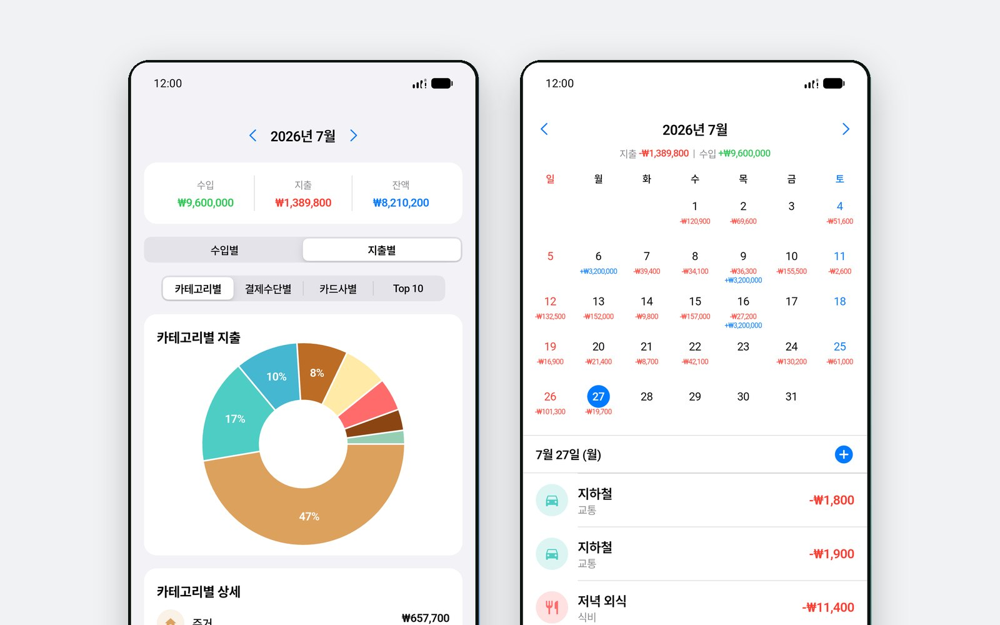
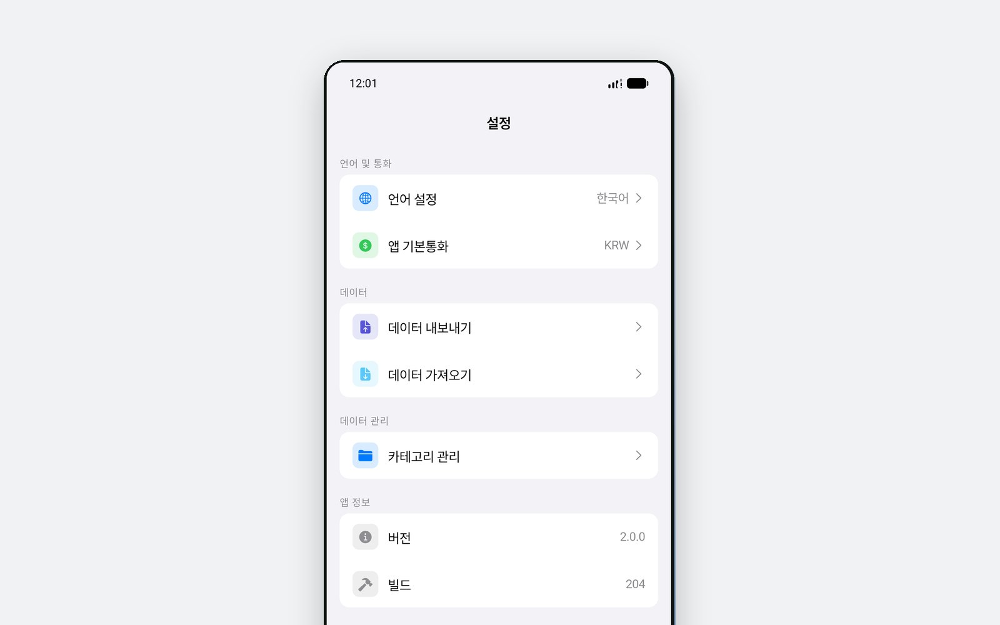

네 번 누르면 끝
날짜, 금액, 카테고리, 결제 수단. 금액 칸이 계산기라 더치페이 계산을 다른 앱 열지 않고 그 자리에서 합니다.
커피 한 잔을 네 번의 탭으로 — 날짜, 금액, 카테고리, 결제 수단. 그리고 도넛 차트와 달력으로 이번 달이 어디로 갔는지 봅니다. 가입도, 계좌 연동도 없고, 기록은 폰 밖으로 나가지 않습니다.

만든 이유
커피 하나 적는 데 1분 30초가 걸려서 그만둡니다. K-Pockit은 하루에 실제로 쓸 수 있는 20초에 맞춰 만들었습니다. 입력 화면이 가장 먼저 손에 닿고, 그 20초를 늘리는 것들 — 계정, 계좌 연동, 초기 설정 마법사 — 은 넣지 않았습니다.
들어 있는 것
날짜, 금액, 카테고리, 결제 수단. 금액 칸이 계산기라 더치페이 계산을 다른 앱 열지 않고 그 자리에서 합니다.
엔으로 결제하고 원으로 생각한다면, 외화 금액을 넣으면 그날 환율로 환산됩니다. 11개 통화를, 필요할 때만 불러옵니다.
달력의 날짜 아래에 그날의 수입과 지출이 붙습니다. 날짜를 누르면 그날 기록만 봅니다.
카테고리별·결제수단별·카드사별 도넛 차트, 가장 많이 쓴 항목 Top 10, 그리고 이번 달 수입·지출·잔액.
이번 달 전체, 또는 카테고리 하나에 한도를 둡니다. 알림을 보내려고 있는 게 아니라 들여다보라고 있는 기능입니다.
아이콘과 색을 골라 카테고리를 추가합니다. 기본 카테고리는 출발점일 뿐 고정된 목록이 아닙니다.

어디서 왔나
첫 버전은 2026년 4월 App Store에 올라갔습니다. 1월마다 가계부 앱을 깔고 2월에 그만두는 사람을 위한 장부였습니다.
2.0은 그해 6월에 나왔습니다. 디자인을 새로 하고 도넛 통계, 예산, 커스텀 카테고리, 그리고 기록이 앱 안에 갇히지 않도록 CSV·JSON 내보내기를 넣었습니다.
안드로이드는 같은 Flutter 코드로 만들었고 2026년에 비공개 테스트를 마쳤습니다. 지금은 구글 심사 중입니다.
개인정보
기록을 묶어둘 계정도, 보낼 서버도 없습니다. 모든 거래는 기기 안의 데이터베이스에 있고 앱을 지우면 함께 사라집니다. 밖으로 나가는 것은 환율을 물어볼 때 공개 환율 서비스로 보내는 통화 코드 하나뿐입니다. 앱은 무료이고 배너 광고가 붙기 때문에 Google AdMob이 광고 식별자와 기기 정보를 수집하며, 그 내용은 전부 개인정보처리방침에 적어두었습니다.
App Store에서 무료이고, 안드로이드는 준비 중입니다. 오프라인에서 동작하며 네트워크는 광고와 환율에만 씁니다.
